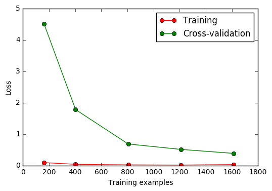

交叉验证 2 Cross-validation
作者: Bhan 编辑: 莫烦 2016-11-03
学习资料:
sklearn.learning_curve 中的 learning curve 可以很直观的看出我们的 model 学习的进度,
对比发现有没有 overfitting 的问题. 然后我们可以对我们的 model 进行调整, 克服 overfitting 的问题.
Learning curve 检视过拟合
加载对应模块:
from sklearn.learning_curve import learning_curve #学习曲线模块
from sklearn.datasets import load_digits #digits数据集
from sklearn.svm import SVC #Support Vector Classifier
import matplotlib.pyplot as plt #可视化模块
import numpy as np
加载digits数据集，其包含的是手写体的数字，从0到9。数据集总共有1797个样本，每个样本由64个特征组成， 分别为其手写体对应的8×8像素表示，每个特征取值0~16。
digits = load_digits()
X = digits.data
y = digits.target
观察样本由小到大的学习曲线变化, 采用K折交叉验证 cv=10,
选择平均方差检视模型效能 scoring='mean_squared_error',
样本由小到大分成5轮检视学习曲线(10%, 25%, 50%, 75%, 100%):
train_sizes, train_loss, test_loss = learning_curve(
SVC(gamma=0.001), X, y, cv=10, scoring='mean_squared_error',
train_sizes=[0.1, 0.25, 0.5, 0.75, 1])
#平均每一轮所得到的平均方差(共5轮，分别为样本10%、25%、50%、75%、100%)
train_loss_mean = -np.mean(train_loss, axis=1)
test_loss_mean = -np.mean(test_loss, axis=1)
可视化图形:
plt.plot(train_sizes, train_loss_mean, 'o-', color="r",
label="Training")
plt.plot(train_sizes, test_loss_mean, 'o-', color="g",
label="Cross-validation")
plt.xlabel("Training examples")
plt.ylabel("Loss")
plt.legend(loc="best")
plt.show()

如果你觉得这篇文章或视频对你的学习很有帮助, 请你也分享它, 让它能再次帮助到更多的需要学习的人. 莫烦没有正式的经济来源, 如果你也想支持 莫烦Python 并看到更好的教学内容, 赞助他一点点, 作为鼓励他继续开源的动力.